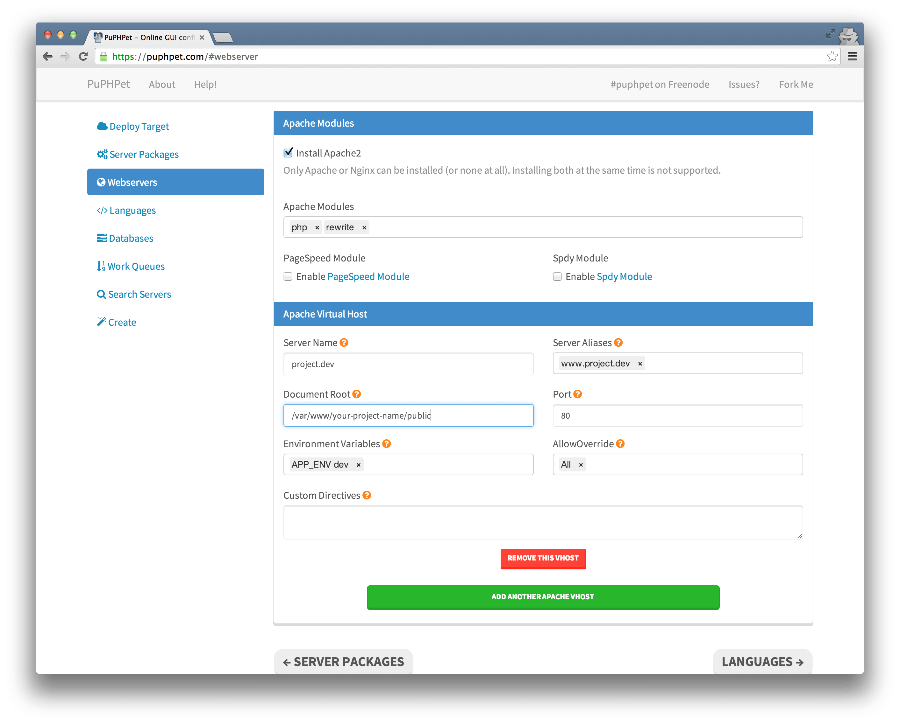
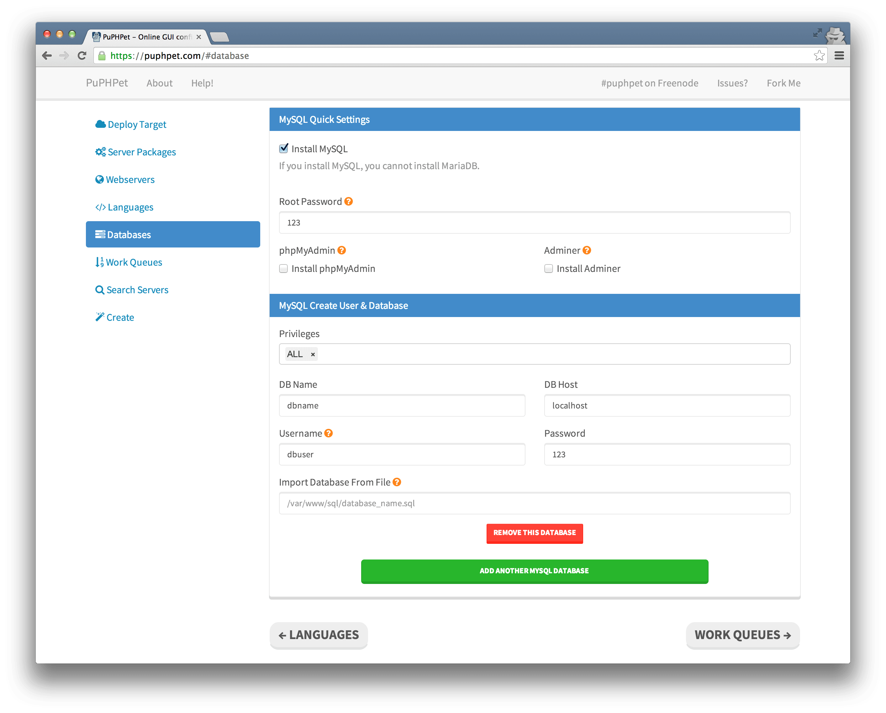
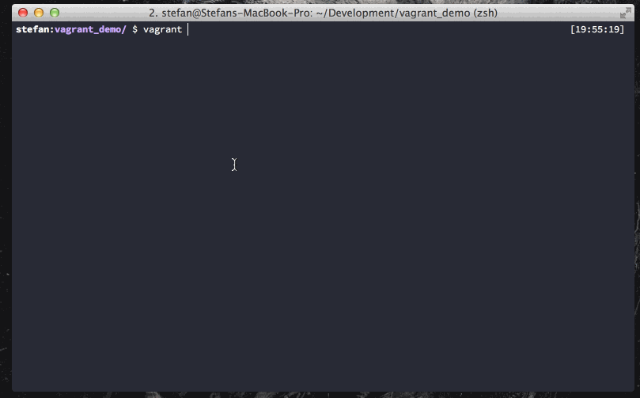
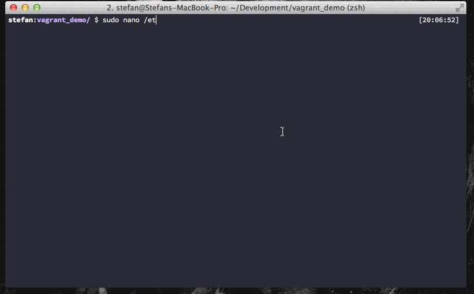
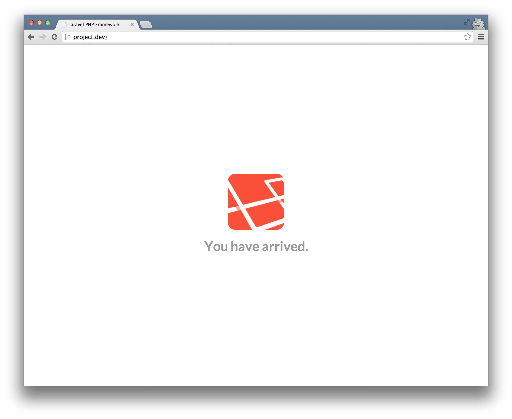
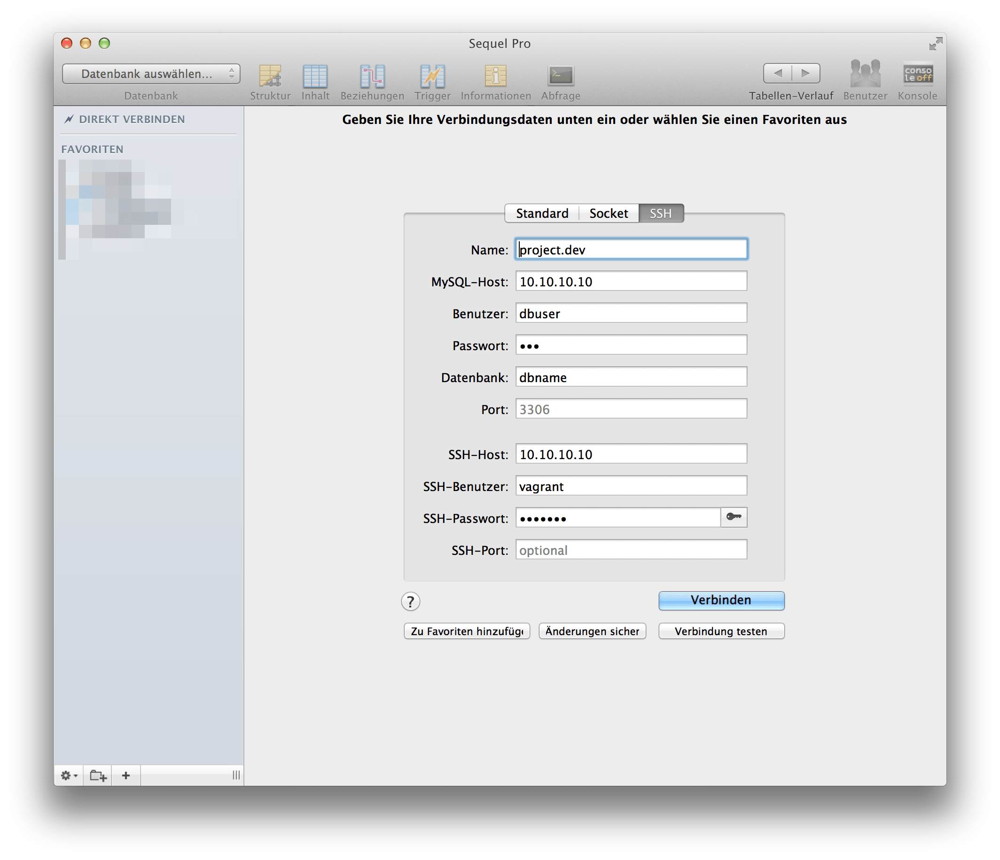

Laravel + Vagrant + SequelPro
Update: With Version 4.2 Laravel introduced Homestead. A Vagrant-Box to use Laravel right out of the box. If the tutorial below is to difficult to you, give Homestead a try.
I’m pretty new to Laravel and I just started to work on a new webapp (soon more) where I want to use Laravel in connection with Vagrant.
Since I didn’t found a proper solution that worked for me, here is my little tutorial.
Note: At the time of writting this guide, I used Vagrant 1.4.3 and Mac OS X 10.9.2.
PuPHPet
Head over to PuPHPet and configure your server like so:
Deploy Target

Remember Local VM IP Address. We need this later.
Webserver

Set Server Nameto a URL you want to work with. Change Document Rootto /var/www/your-project-name/public.
MySQL

Just remember the credentials. We need them later.
All set? Then hit the download button.
Setup Vagrant
I assume you have Vagrant alredy installed. If not, head over to their website and follow their Get Started Guide.
So you unpacked your PuPHPet-Files and moved them into your local development folder? Great. Next we should edit the Vagrant-File.
I stumbled upon a permission error, when I used Laravel with Vagrant and searched through Stackoverflow and many forums, and the following changes should fix the problem:
Replace
config.vm.synced_folder "#{folder['source']}", "#{folder['target']}", id: "#{folder['id']}", type: nfs
with
config.vm.synced_folder "#{folder['source']}", "#{folder['target']}", id: "#{folder['id']}", type: nfs, :mount_options => ["dmode=777","fmode=666"]
(You find an example file here ).
Save the file and open a terminal window and cd into your development folder.

- Initialize Vagrant with
vagrant up. This may take some minutes

- SSH into VM with
vagrant ssh cd /var/www- Install Laravel with
composer create-project laravel/laravel your-project-name --prefer-dist. This may also take some minutes to download. exit
Next we need to adjust our hosts-File. Open your Hosts-File via sudo nano /etc/hosts/and enter your previously entered IP-address and server name. In my example I used 10.10.10.10 project.dev.

If your’e done, open your browser and head to http://project.dev.

If you don’t see anything, try this in your terminal:
chmod -R 777 your-project-name/app/storage.
###Sequel Pro Settings
PhpMyAdmin is ugly as hell and I don’t like it anymore. So I use Sequel Pro. These are the credentials I use to connect to my VM.

MySQL-Host:
10.10.10.10(or IP that you choose for it)
Username:dbuser(or username you created)
Password:123(or your choosen MySQL Password)
SSH Host:
10.10.10.10(or IP that you choose for it)
SSH User:vagrant(vagrants default username)
SSH Pasword:vagrant(vagrants default password)
Outro
I hope this little guide helps you with setting up Laravel with Vagrant. If you have any problems, found a typo let me know.
Questions?
Have a question about this post or anything else?